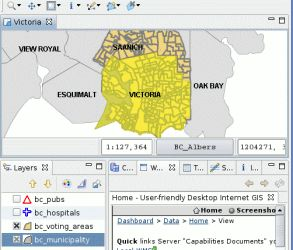
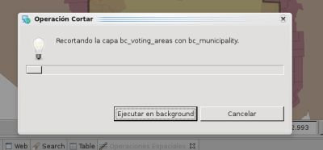
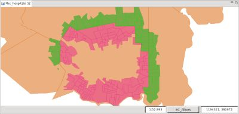

Calcula la diferencia geométrica entre dos Capas
La Operación Cortar toma los features de una Capa Cortante de tipo vector y una Capa Fuente de tipo vector y las usa para calcular la diferencia geométrica entre las capas Fuente y Cortante, almacenando el resultado en una tercera Capa.
Es posible usar los features seleccionados, si se establece una selección, en ambas Capas de corte y de fuente para limitar el ámbito de la operación.
Ninguna de las Capas usadas para calcular la diferencia es modificada bajo ningún concepto. Una tercera Capa es creada por defecto, pero el usuario puede seleccionar una capa existente para almacenar el resultado.
Empezaremos este ejemplo de uso seleccionando un único feature de la capa municipalities que usaremos como máscara de corte contra la capa voting areas.
La Figura 1 muestra el Feature seleccionado, "Victoria" en la capa de municipios.

Figura 1. Definir la máscara de corte mediante una selección por BBox.
Nos dirigimos a la Vista de Operaciones Espaciales, y seleccionamos Cortar en el menú de Operaciones.
Aparecen las opciones específicas de la Operación Cortar.
Debemos indicar los valores de entrada de la operación, como se muestra en la Figura 2:

Figura 3. Diálogo de progreso.
Una vez que finaliza la Operación, si se creó una nueva capa para almacenar el resultado, ésta será automáticamente añadida al Mapa actual.
La Figura 4 muestra la recién creada Capa (Cortar-1, en verde) añadida al mapa, con los Features resultantes de aplicar las diferencias entre las Capas Fuente y Cortante.

Figura 4. Capa Resultado
{kind=link}
{kind=link}
{kind=link}
{kind=link}